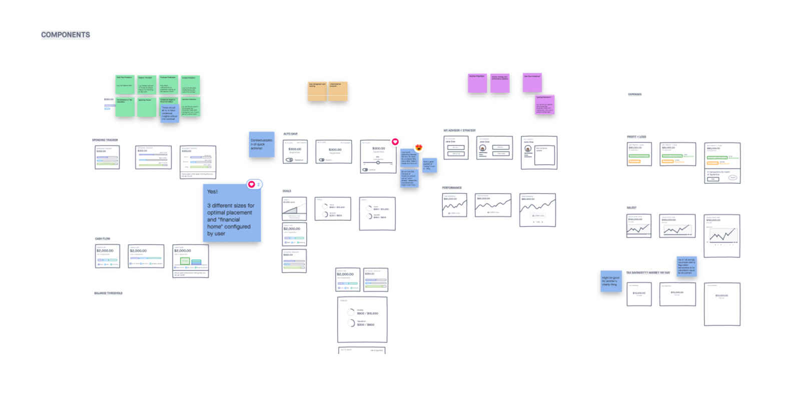
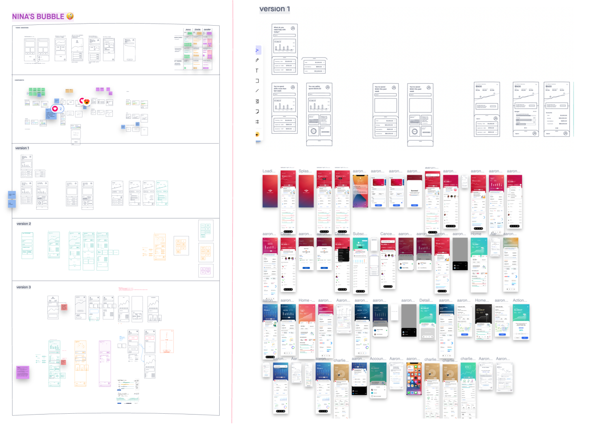
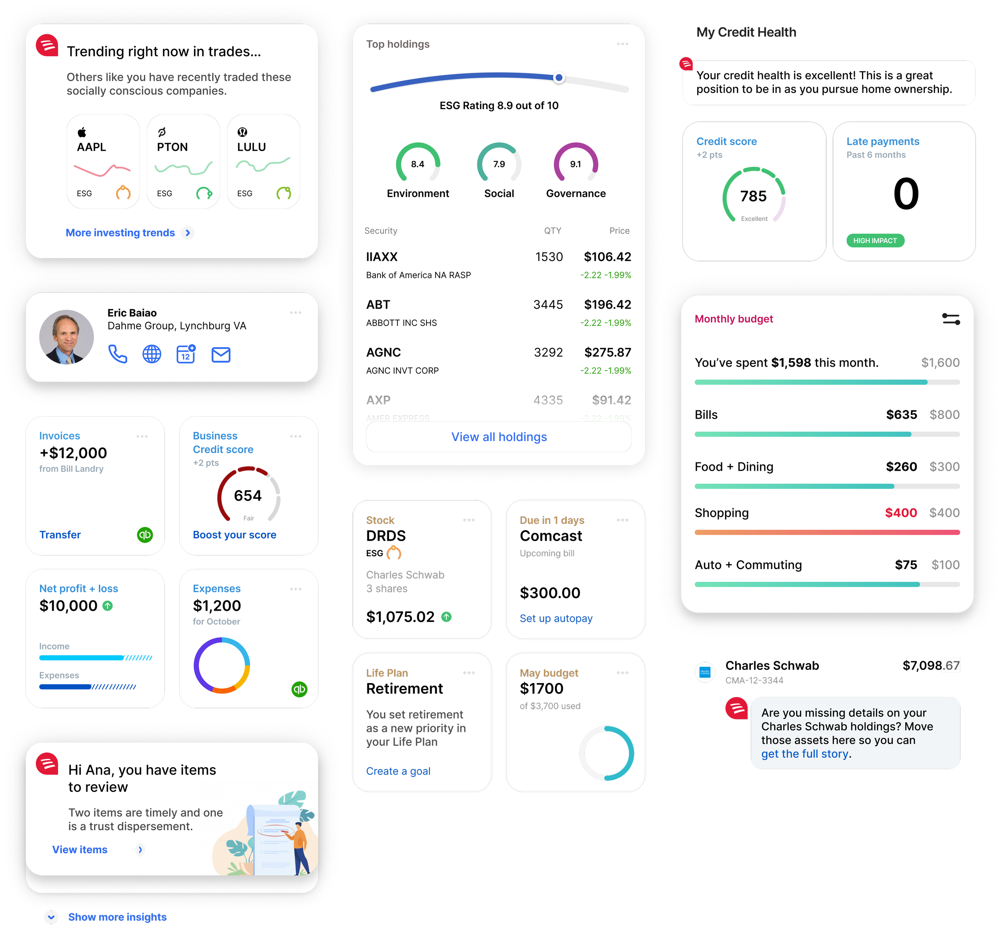
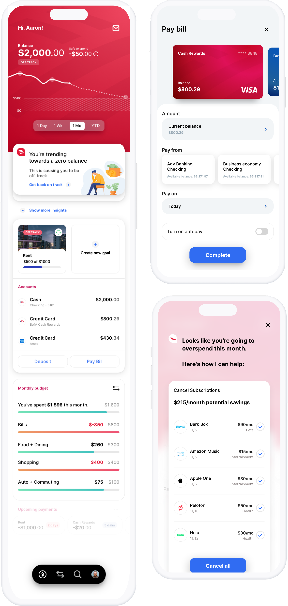
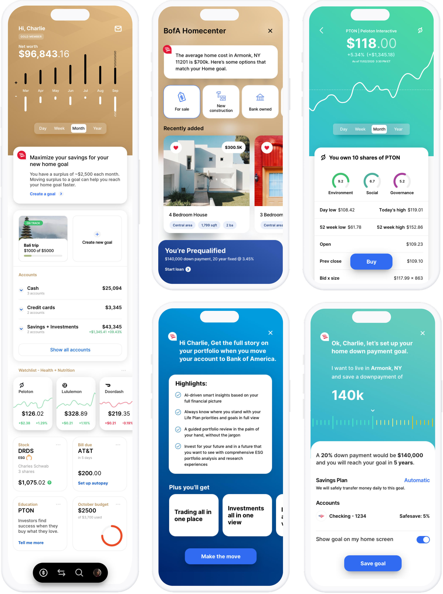
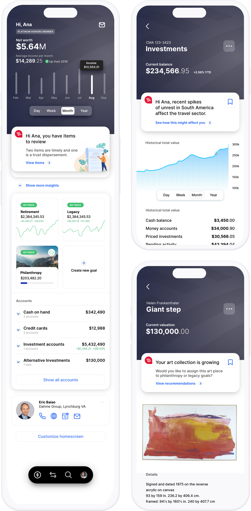

Bank of America Enterprise App
This was a future-state vision of an enterprise-wide app experience for Bank of America. Personalized to the individuals’ varied and potentially complex relationship with the bank and needs.

Problem
All lines of business are being consolidated into a single experience (401k, individual investing, advised relationships, private banking, small business, and consumer banking). How can we create a unified experience that respects each user's unique relationship with the bank and their finances. Additionally we had an aggressive deadline of 3 months to make it in time for a Board of Directors meeting.
Initial sketches
We created a set of optional components aligned to our identified three personas. We didn't just recreate what currently existed across BofA's enterprise; instead, we built from the ground up, sourcing from patterns within and outside the financial space.
Core principles:
Intuitive: Users can instinctively navigate the app. Their mental models are reflected in the features, labels, calls-to-action, etc.
Fluid, Features are organized recognizably and predictably. It feels fluid and natural, and each screen is connected.
Simple: Visuals are not distracting, with only the meaningful information presented.
Welcoming, Users are offered a positive experience that is customized to their needs. Delivering insight, functionality, and guidance when and where needed.

Even with very little time - we still explored multiple approaches to the initial designs.

After building the baseline story flow and lo-fi components we moved on to initial high-fidelity design executions.
Outcome
The final prototype created a unified framework that adapted to the user allowing them to perform tasks that previously force them to jump between multiple apps. Even though we had only 3 months from beginning to end, we managed to work through foundational research to final prototypes.

Examples of contextual components we built to solve for various use cases.
Aaron experience
Simple account profile. Hands-off mindset. Mass market, small business owner.

Charlie
Average account profile. Hands-on mindset. Affluent, casual trader.

Ana
Complex banking relationship. Hands-on mindset, High-net-worth, high-growth business owner.
